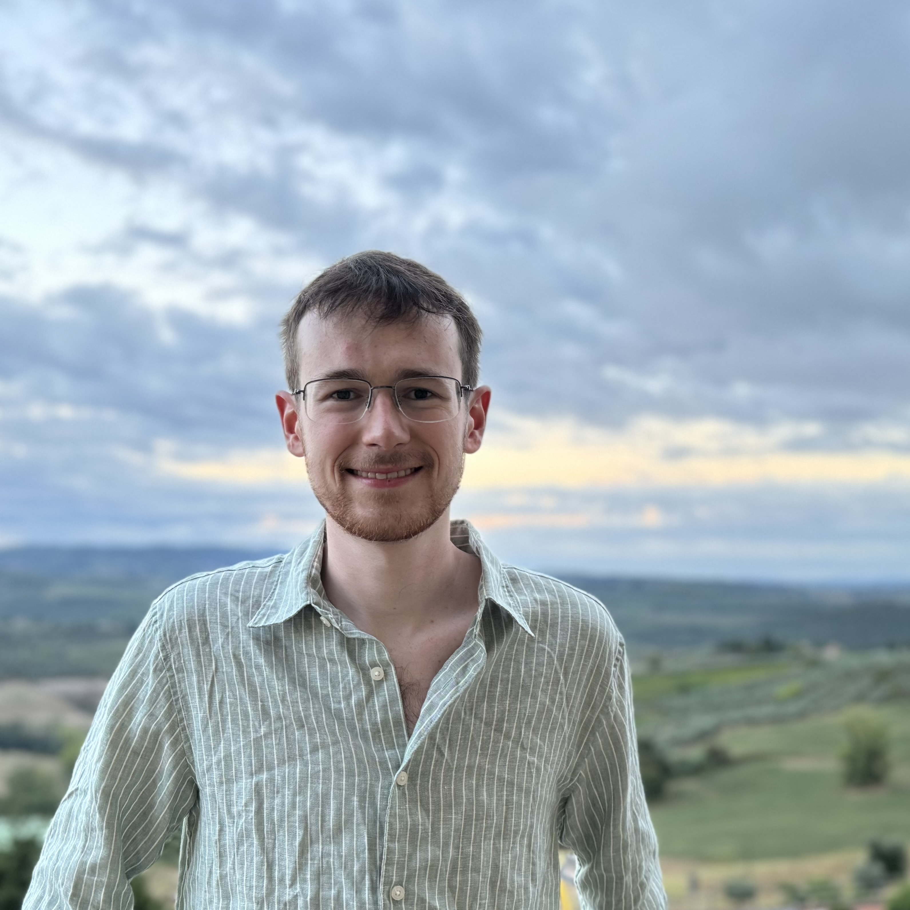
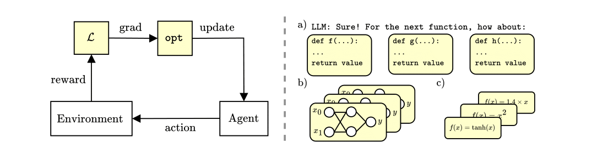
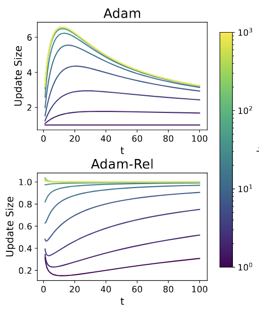
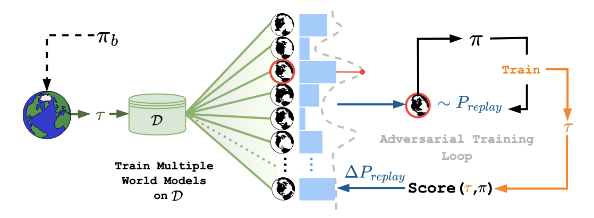

|
Alexander D. Goldie
I am a PhD student at the University of Oxford, under the supervision of Jakob Foerster and Shimon Whiteson. My research focuses on automated algorithm discovery, autonomous AI research and meta-reinforcement learning. Currently, I am a Research Scientist Intern at Wayve, where I have been working on offline reinforcement learning for autonomous driving. My PhD is offered by AIMS, a competitive PhD-level course for Machine Learning. |
 |
{kind=link}
News
|
{kind=link}
Research
|
 |
DiscoBench: An Open-Ended Benchmark For Algorithm DiscoveryAlexander D. Goldie, Zilin Wang, Adrian Hayler, Deepak Nathani, Edan Toledo, Ken Thampiratwong, Aleksandra Kalisz, Michael Beukman, Alistair Letcher, Shashank Reddy, Clarisse Wibault, Theo Wolf, Charles O'Neill, Shimon Whiteson, Jakob N. Foerster, Roberta Raileanu |
|  |
How Should We Meta-Learn Reinforcement Learning Algorithms?Alexander D. Goldie, Zilin Wang, Jaron Cohen, Jakob N. Foerster, Shimon Whiteson RL Conference 2025 (Outstanding Paper) |
 |
An Optimisation Framework For Unsupervised Environment DesignNathan Monette, Alistair Letcher, Michael Beukman, Matthew T. Jackson, Alexander Rutherford, Alexander D. Goldie, Jakob N. Foerster RL Conference 2025 |
 |
Can Learned Optimization Make Reinforcement Learning Less Difficult?Alexander D. Goldie, Chris Lu, Matthew T. Jackson, Shimon Whiteson, Jakob N. Foerster NeurIPS 2024 (Spotlight Award) Also at AutoRL Workshop @ ICML2024 (Spotlight) |
|  |
Adam On Local Time: Addressing Nonstationarity In RL With Relative Adam TimestepsBenjamin Ellis*, Matthew T. Jackson*, Andrei Lupu, Alexander D. Goldie, Mattie Fellow, Shimon Whiteson, Jakob N. Foerster NeurIPS 2024 |
|  |
Robust Offline Learning via Adversarial World ModelsUljad Berdica, Kelvin Li, Michael Beukman, Alexander D. Goldie, Mattie Fellows, Perla Maiolino, Jakob N. Foerster Open-World Agents Workshop & Adversarial ML Workshop @ NeurIPS24 |
|
Website template by Jon Barron and inspired by Chris Lu. |